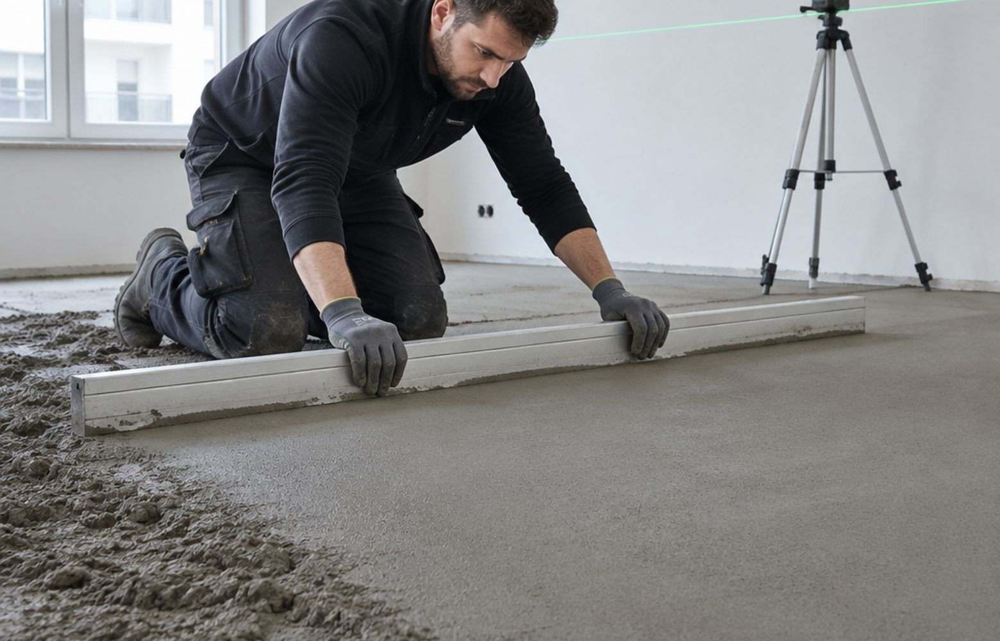
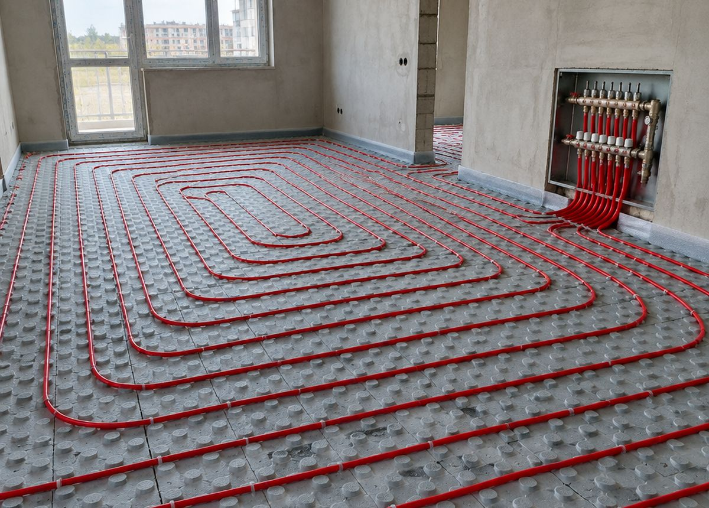
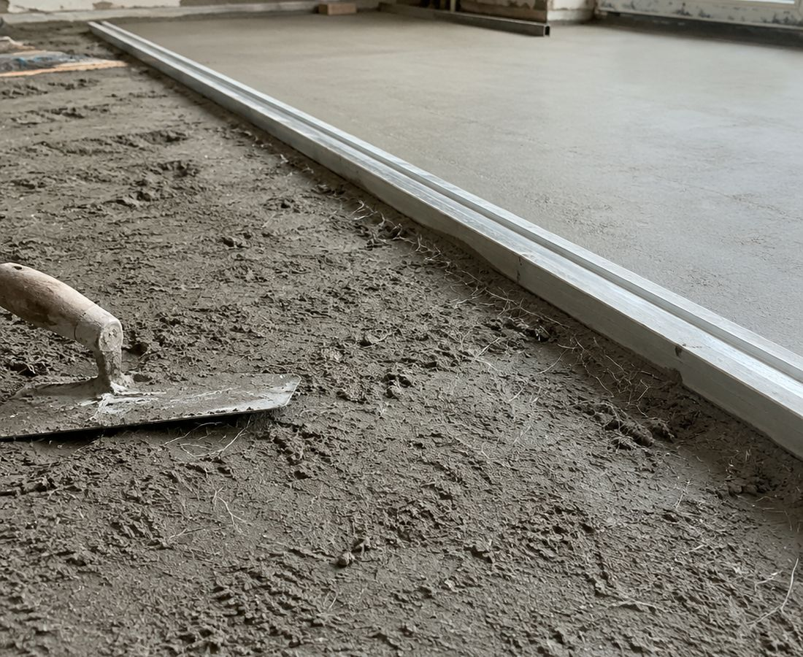
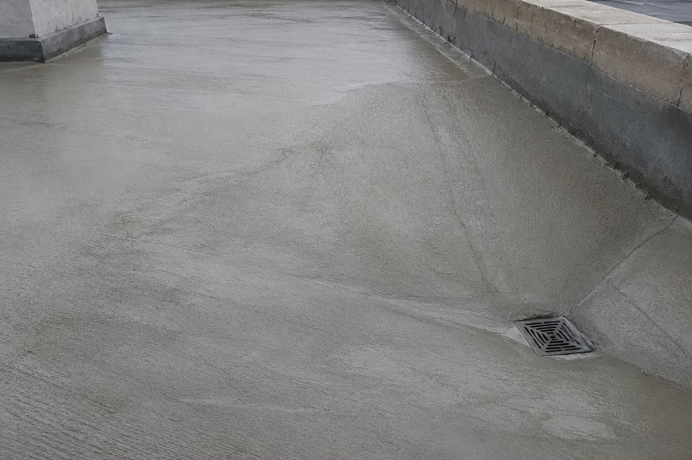
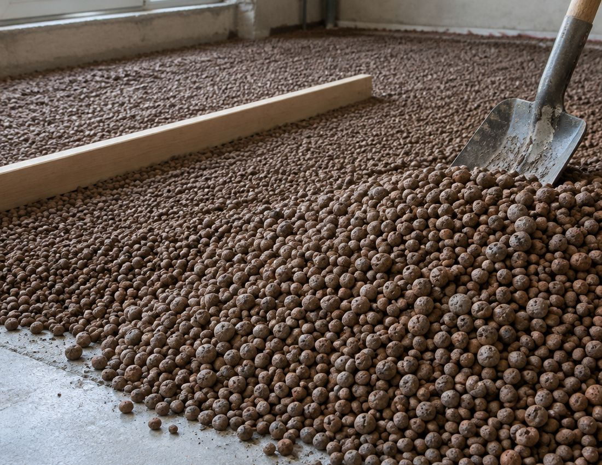
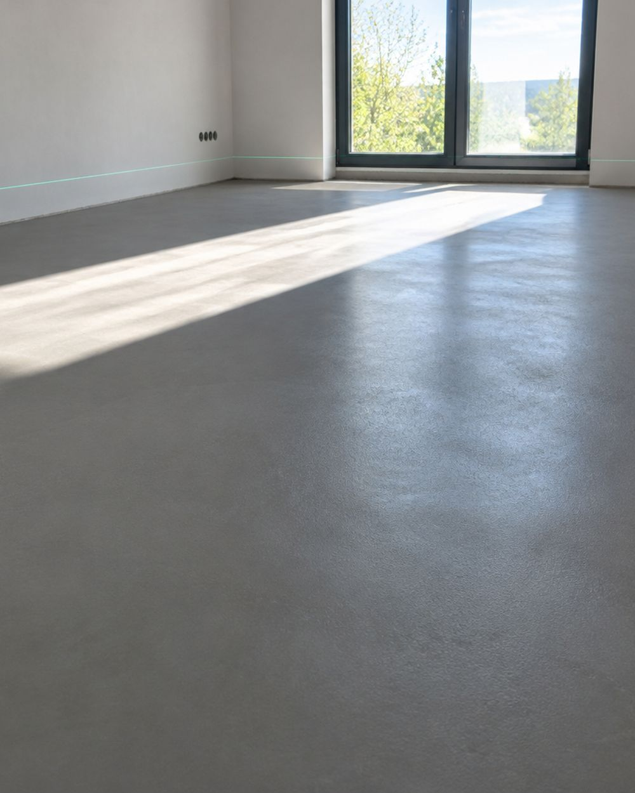

полусухая
Полусухая стяжка
Основная технология: пескобетон с фиброй, минимум воды. Поверхность получается плотной и ровной, усаживается меньше, чем мокрая стяжка, и сохнет быстрее.
дома, квартиры, офисыот 10 м²Подробнее →

Гродно и область · с 2010 года
Дома, квартиры, дачи и офисы. Стяжка по тёплому полу, разуклонка на плоской кровле, полистиролбетон. Готовим основание сами: демонтаж, подсыпка, керамзит, изоляция.
Пирог пола
Выберите тип работ и толщину стяжки — слева видно, как устроен слой, справа считается смесь и вес. Так понятнее, за что платите.
Тип работ
Расход пескобетона — около 20 кг на 1 м² при слое 10 мм. Значения ориентировочные: точную смету считаем после замера.
Услуги
От демонтажа старого пола до финишной плоскости. Можно взять только стяжку, можно весь пирог целиком — с подсыпкой, керамзитом и изоляцией.
Основная технология: пескобетон с фиброй, минимум воды. Поверхность получается плотной и ровной, усаживается меньше, чем мокрая стяжка, и сохнет быстрее.
Заливаем поверх труб и матов тёплого пола: слой закрывает контур целиком, без пустот, и держит тепло. Толщину считаем над трубой, а не от плиты.
Стяжка с уклоном к воронкам и водостокам: вода уходит сама, без луж и застоя. Уклон задаём от минимального до нужного по проекту.
Лёгкая стяжка с гранулами полистирола: выравнивает основание и добавляет тепла, не перегружая перекрытие. Хороша там, где нужен большой слой без лишнего веса.
Демонтаж старого пола, планировка и подсыпка. Керамзит поднимает уровень и утепляет. От основания зависит, ляжет ли стяжка ровно и не треснет ли потом.
Плитная изоляция под стяжку: пенопласт, Пеноплекс, минеральная вата. Гасит шум шагов и удерживает тепло, особенно над холодным подвалом или под тёплым полом.
Разуклонка
На плоской кровле вода должна уходить сама. Перепад зависит от ширины ската и уклона: посчитайте свой вариант до разговора с мастером.
Схема ската
Минимальный уклон для плоской кровли — обычно 1,5–2%. Толщину у воронки задаёт проект; мы считаем, сколько стяжки добавит уклон.
Отправить расчётРаботы
Полусухая стяжка по маякам, контуры тёплого пола, керамзитовая подсыпка, разуклонка на кровле. Фото типовых работ.




Порядок
Четыре шага. Замер и смета — до начала работ: цена не меняется по ходу, если не меняется задача.
Площадь, этаж, что будет сверху. Скажем вилку и сроки.
Приезжаем, смотрим основание и перепады, считаем толщину.
Демонтаж, подсыпка, керамзит, изоляция, маяки по лазеру.
Укладываем смесь, тянем правилом, заглаживаем и убираем за собой.
Вопросы
По полусухой стяжке аккуратно ходить можно уже на следующий день, полную нагрузку даём через несколько дней. Финишное покрытие кладут после высыхания: срок зависит от толщины слоя и условий в помещении. Точные даты говорим после работ.
По перекрытию обычно 40–50 мм, по тёплому полу — не меньше нормы над трубой, чаще 50–60 мм. Если есть перепады или большой слой, обсуждаем керамзит или полистиролбетон.
Полусухая схватывается быстрее мокрой, потому что воды в смеси меньше. Но полное высыхание всё равно занимает время: чем толще слой и влажнее в помещении, тем дольше. Не закрывайте пол плёнкой и проветривайте.
По тёплому полу и по перекрытию над холодным подвалом — да. Плитный пенопласт, Пеноплекс или минвата дают тепло и гасят шум шагов. На кровле важен другой слой: гидроизоляция и уклон.
Да, это часть подготовительных работ: снимаем старое покрытие и стяжку, выносим мусор, планируем и подсыпаем основание.
Гродно и Гродненская область. Дальние районы обсуждаем отдельно — по расстоянию и объёму.

Скажите площадь и что будет сверху: плитка, ламинат или тёплый пол. Назовём вилку по телефону, точную сумму — после замера.